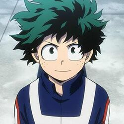

Izuku Midoriya (緑みどり谷や出いず久く, Midoriya Izuku ), también conocido como Deku (デク, Deku ?) Es un estudiante de la Clase 1-A de la Academia U.A. Es el protagonista principal de la serie.
Aunque originalmente nació sin un Don, logra captar la atención del legendario héroe All Might y desde entonces se ha convertido en su alumno cercano y estudiante en la Academia U.A., convirtiéndolo en el noveno usuario del Don One For All.
